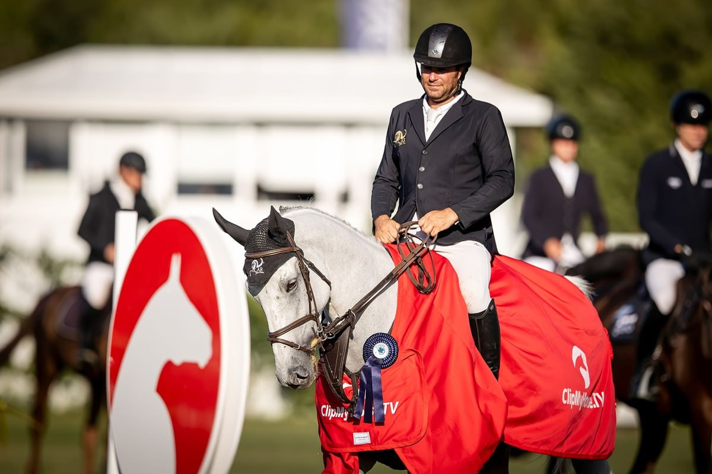

Carlos Bosch lidera la participación española en el Gran Premio del CSIO3* Peelbergen
El jinete español firmó la mejor actuación nacional en la prueba de máxima altura del concurso disputado en los Países Bajos, consolidando su presencia en el circuito internacional CSIO.

Carlos Bosch encabezó la actuación española en el Gran Premio del CSIO3* de Peelbergen, celebrado en los Países Bajos. El jinete andaluz destacó como el mejor de la expedición nacional en la prueba de máxima categoría del concurso, en una jornada en la que varios binomios españoles tomaron parte en el programa internacional del evento.
El CSIO3* de Peelbergen forma parte del calendario de competiciones oficiales por equipos nacionales de la Federación Ecuestre Internacional, con pruebas de nivel tres estrellas que atraen a jinetes de distintos países europeos. El concurso se desarrolló en el complejo ecuestre neerlandés durante el fin de semana, con el Gran Premio como prueba estelar del programa.
La actuación de Bosch reafirma su presencia habitual en concursos de salto del circuito continental, consolidando su trayectoria en pruebas de carácter internacional CSIO.
— Redacción de Hípica al Día